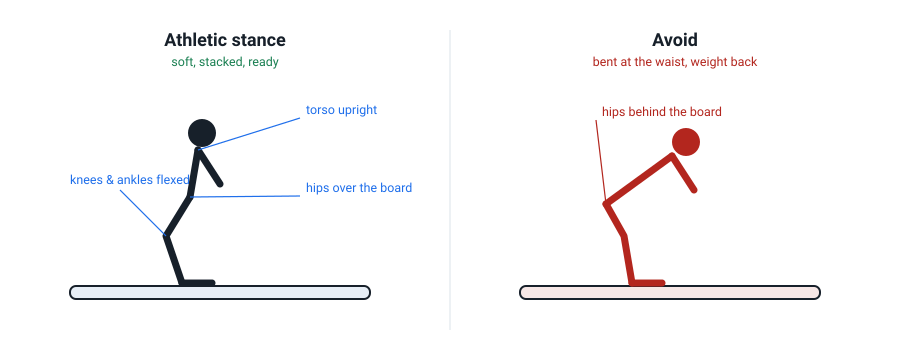

Stance & Balance: The Athletic Position
Every movement you make on a snowboard is a departure from one home position. If that position is wrong, every drill built on top of it is wrong too. Before we touch turning again, we set the foundation.
Why this, before more turning?
Your trip goal is to link turns down a green and keep up with the group. Tiny balance errors are cheap to fix now and expensive to fix at speed — a rider who sits back or bends at the waist will always struggle on steeper terrain, because the same flaw just gets amplified. The official beginner progression puts balance while moving and an athletic stance at the very start, before turns (AASI Level 1 progression). So do we.
The athletic stance, joint by joint
Think of a goalkeeper: soft, springy, ready to move any direction, but not crouching. That is the target.
- Ankles, knees and hips softly flexed. Not locked straight, not a deep squat. A gentle bend you can hold all day.
- Torso upright. Ribs stacked over hips. The flexing happens in your legs, not your spine.
- Shoulders and hips roughly aligned with the board. You ride sideways, so your body faces slightly across the slope, not straight downhill.
- Hips over the middle of the board. Not behind it. This is the one that undoes most beginners.
- Weight centred between both feet, ready to move fore or aft (Lesson 4).

Flexion is your suspension
Straight legs transmit every bump straight to your balance. Softly flexed legs act as suspension: they absorb terrain, keep your centre of mass steady, and let you manage pressure — which is the whole subject of Lesson 4. Pros look "low and strong" for this reason. You are not trying to look aggressive; you are trying to stay balanced while the ground moves under you.
The two faults to avoid
Watch for these in the mirror and, later, in your tracks:
- Bent at the waist. Butt out, chest down, like touching your toes. It feels "athletic" but it puts your weight behind the board and kills your ability to turn. Flex your knees, not your spine.
- Locked legs, sitting back. Fear of going down makes beginners straighten up and lean back. The board's back edge loads, the front goes light, and turning becomes impossible.
Stand in your stance. Now push your hips forward until they sit over the middle of the board and your chest comes up. Almost every beginner flinches at how far forward this feels — that flinch is the correction.
Setting up: width, angles, lead foot
On rental gear, don't agonise over this. A stance roughly shoulder-width, with a small "open" angle on the front binding (your lead foot turned slightly toward the nose), gives most beginners a comfortable platform. Confirm your lead foot — regular (left forward) or goofy (right forward) — and set the bindings so your natural stance sits there. A slightly open stance makes it easier to see the way you're going and to steer; instructor Malcolm Moore drills correct posture as the base of everything else (Malcolm Moore, posture drill).
Off-snow: stand as if on your board (natural sideways stance). Soft ankles, knees, hips; torso tall; hands out front. Hold 30 seconds, then rise and reset. Do 5 reps. Say out loud where your hips are: “over the board”.
At the dome: on a flat or gently sloping area, glide in a straight line (one foot or both, as you like). Have a friend push the tail so you drift. Just hold the stance: soft legs, tall torso, hips centred. Stop, reset, repeat eight times. If you catch yourself bending at the waist, stand tall and reset.
Check your understanding
1. In the athletic stance, your ankles, knees and hips should be…
Soft, even flex gives you suspension and the ability to move. Locked legs can't absorb anything; a deep squat is unwearable and throws your weight back.
2. Where should your hips sit?
Hips over the middle of the board keep your weight centred. Sitting back (hips behind the board) is the single most common beginner fault.
3. A frightened beginner tends to do which of these?
The classic fear posture: straighten up, lean back, and fold at the waist. It dumps your weight behind the board and makes turning much harder. Flex the knees instead.
4. What do straight, locked legs cost you?
Flexed legs are your suspension — they absorb terrain and let you manage pressure. Straight legs pass every bump straight into your balance and remove your ability to pressure the board.
Watch it, don't just read it
- How to Snowboard: A Beginner's Guide — Part 1 PSIA-AASI · boot fit, the parts of the board, and finding your stance. The official version of this lesson.
- Beginner Snowboard Tips (playlist) Malcolm Moore · start with the posture video — it is the clearest on body position.
- Snowboard Pro Camp Ex-Whistler instructor · a second explanation of stance and balance if the first doesn't land.

Watch the AASI/PSIA Beginner's Guide to Snowboarding, Part 1 (YouTube) — Chris Rogers covers boot fit, the parts of the board, and stance. It is the authoritative version of this lesson from a certified team member.
Your teacher is right here
Not sure if your rental stance is set up right, or whether you're regular or goofy? Stuck on "where do my hips actually go"? Ask — this is exactly the thing worth getting a second look at before Lesson 3.
Snowboarding Fundamentals · lessons/0002-stance-and-balance.html